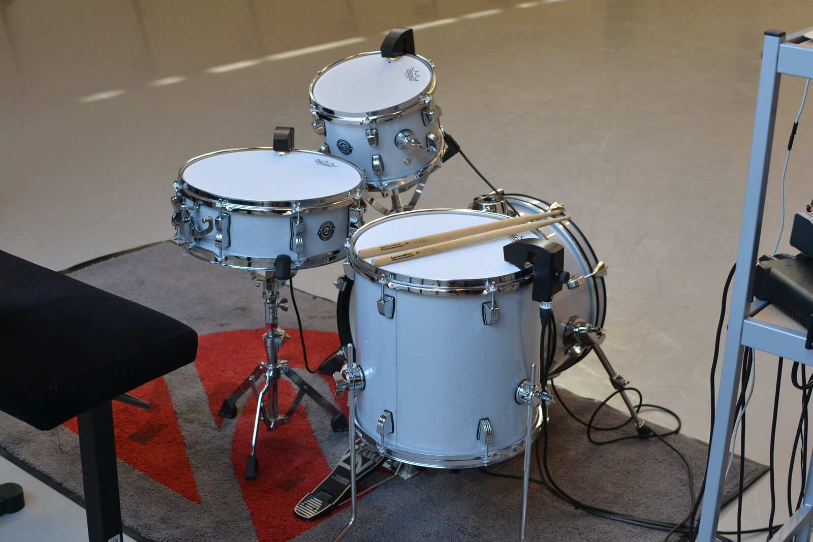
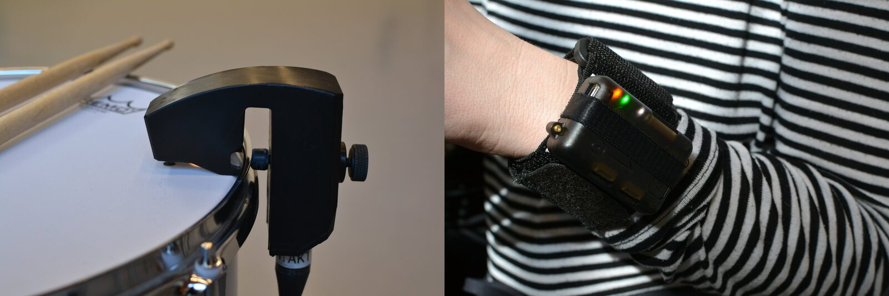
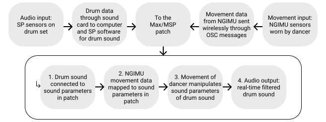
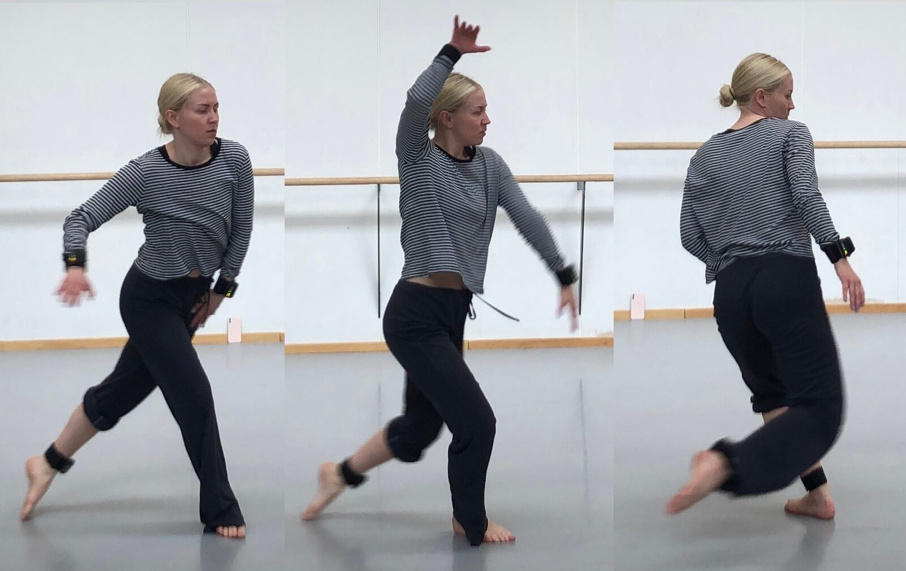
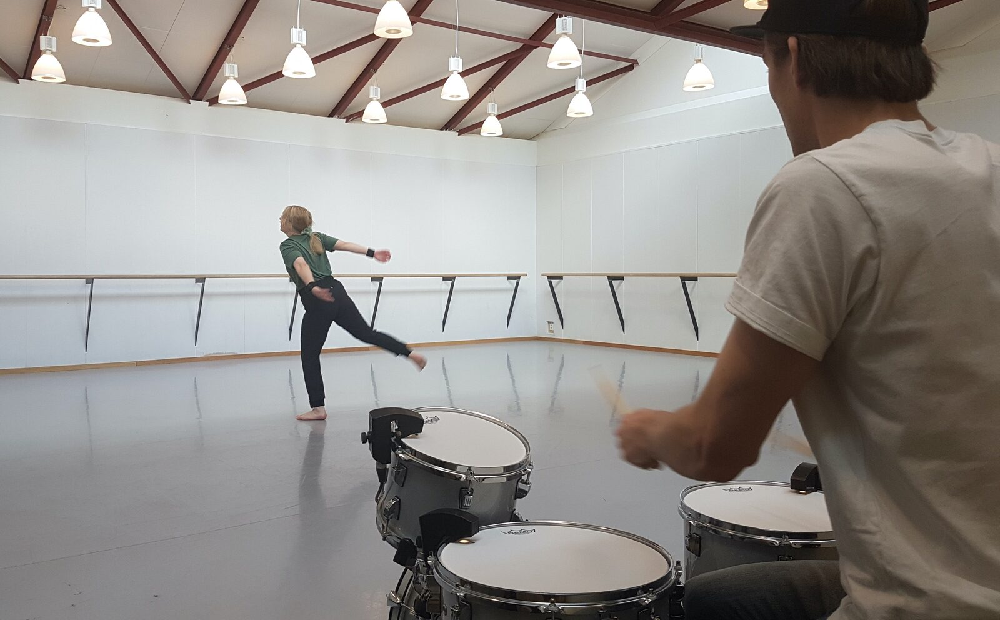
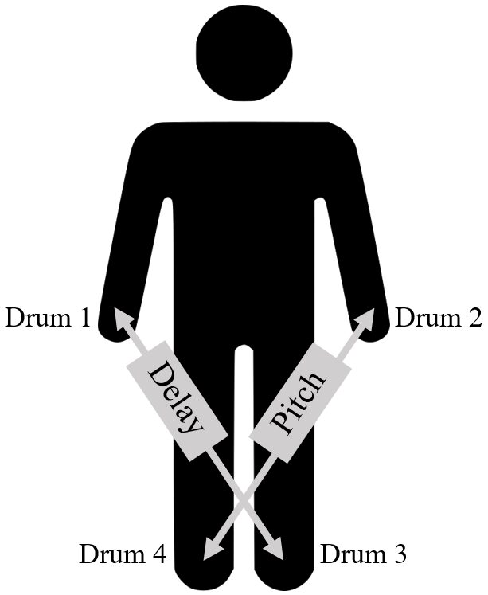

Sensitiv -- Designing a Sonic Co-play Tool for Interactive Dance
Abstract
In the present study a musician and a dancer explore the co-play between them through sensory technology. The main questions concern the placement and processing of motion sensors, and the choice of sound parameters that a dancer can manipulate. Results indicate that sound parameters of delay and pitch altered dancers’ experience most positively and that placement of sensors on each wrist and ankle with a diagonal mapping of the sound parameters was the most suitable.
Author Keywords
Interactive dance, sonic interaction design
CCS Concepts
•Applied computing → Sound and music computing; Performing arts;
Introduction
Many studies [1][2][3][4][5] have explored the interaction between music and dance through technology. However, there is a lack of studies exploring how the relationship between a dancer and a musician improvising together changes when introducing sensor technology. This type of performance setting will be referred to as co-play, where the dancer contributes to the sonic dimension of a performance collaboratively with the musician.
In our present project1 - named Sensitiv - we explore the co-play between a dancer and a drummer, investigating how to create an interactive co-play tool that influences the dancer’s experience positively. The dancer is wearing motion sensors to manipulate drum sounds triggered by the drummer through percussion sensors on the drum set. We explore where motion sensors should be placed, how the real-time motion to sound mappings should be designed, and the prototype’s impact on the dancer’s sense of control [6][7]. This stance is novel as - to the best of our knowledge - no previous studies examined the introduction of technology to the co-play between dancer and musician in a completely live setting.
We create a prototype involving the perspectives of a dancer and a drummer, and evaluate the applicability of the prototype with a larger group of dancers.
Background
Interactive dance makes use of motion tracking technology to control an environment in real-time [8][9]. Previous studies have been conducted in the context of interactive dance, applying, for instance, Inertial Measurement Units (IMUs) [1][2][4][5] with objectives such as manipulating or composing sound. When designing new interfaces for music and dance, creating control and intimacy is central [6]. Control intimacy has been defined as the user’s capacity of creating desirable sounds and the perceived coherency between movement and user capabilities [6][7].
Placing wearable sensors on the arm of dancers resulted in an enhanced experience of controlling the sound [4] and emphasized movements [1]. The mapping of movement to sound is essential when designing new instruments [10][11], and need to suit the performers’ expressive aspirations [11][12]. Previous research indicates that complex mappings are to be preferred, whereas simpler mappings may be less stimulating but facilitate instant interaction [10][13], while providing the dancer sufficient but limited information may enhance the dancer’s flow experience [14].
Method
A prototype was first developed by the two first authors, the drummer Jakob Klang, and the dancer Isabell Hertzberg, and then evaluated by seven dancers (Figure 1).

Figure 1. Method overview.
Initial Prototype
Equipment


Figure 2. Drum set with SP sensors.
Four non sound-emitting drums (Figure 2) were equipped with Sensory Percussion (SP) sensors2 converting drum strokes to sound (Figure 3). Four NGIMU sensors3 (400 Hz, six DOF) tracked dancer movement (Figure 3), communicating OSC messages to a laptop running Max/MSP 84. A MOTU 8pre sound card was used as sound interface. We will refer to NGIMU as “sensors”, and to drum sensors as “SP sensors”.


Figure 3. Left: SP sensor on drum. Right: NGIMU sensor on Isabell’s wrist.
System Setup
SP sensors and software facilitated mapping sounds to different drum strokes, and the resulting digital sound signal was sent via the sound card to Max/MSP (Figure 4). This facilitated the manipulation of drum sounds using either gyroscope or accelerometer data from the sensors. In the Max/MSP patch, the sensor data interacted with the drum sound through a VST plugin provided by Sunhouse.


Figure 4. System overview of prototype.
Development study


Figure 5. Isabell during the development.
A prototype was designed from Isabell’s and Jakob’s first-person perspectives [15] in iterative think-aloud sessions [16] throughout a five-week period. Initially evaluated were raw accelerometer data of one of the three axes mapped to volume or pitch [17]. One sensor was initially placed on Isabell’s right wrist, subsequently explored with either two or four sensors on different body part combinations [18] (Figure 5). Drum sounds were created by Jakob to suit the developed prototype.
Evaluation study
The evaluation study was conducted individually with seven female dancers accustomed to improvising dance but not familiar with the used setup. Each participant was video recorded.
Evaluation started with three dance sections, with Jakob initially playing similarly to all participants shaping his playing depending on the interaction:
Sensors turned off, where the participant was instructed to improvise a theme to compare the experience without and with the sensors turned on.
Exploration with sensors turned on, without any information given about the setup to enable the participant to explore alone.
Exploration of the impact of the sensors after a short explanation of the prototype (Figure 6).


Figure 6. Jakob playing to one participant.
After dancing, participants filled a questionnaire5, followed by a semi-structured interview6 in which a video of the third section was watched to think aloud and verbalize the experience. Only the first and last sections were discussed and compared.
Results
Development Study
Manipulation of volume was dropped since neither Jakob nor Isabell found it satisfying, and Isabell encouraged the change of sound parameter control from accelerometer to gyroscope data. Only one sound parameter - mapped to manipulate all four drums - was tested at a time.
Isabell experienced immediate control of pitch using the sensor’s y-axis data (degrees/s) corresponding to tilting the wrist. The data were mapped to the range of +/- 500 Hz (step size: 10 Hz), with 0 Hz for absence of movement. Manipulation of delay was successfully tested by using a comb filter, mapping the square root sum of the three dimensions of the gyroscope data to control the feedback parameter (range: 0 to 0.8, delay: 400ms).
Sensor placements explored were the wrists and ankles. Using four sensors with equal sound parameters mapped diagonally (Figure 7), Isabell experienced the feeling of control being most detailed, despite being less aware of the effect of particular movements.


Figure 7. Overview of final mapping.
Isabell considered it messy when each sensor was mapped to all drums. Therefore, in the final prototype7, each body part with a sensor only manipulated one drum. This created four simple one-to-one mappings, either manipulating pitch or delay, resulting in several mapping layers related to the musical instrument. Isabell then experienced that she “owned the sound”, while Jakob experienced enhanced involvement in the co-play.
Evaluation Study
Six participants declared having a positive experience, acquiring a positive change between the first and last section due to noticing that they affected the sound, although not understanding how or when. Three participants mentioned that their sense of co-play changed. However, all participants expressed that they did not fully understand the system, and expressed feelings of confusion and frustration, e.g.:
“I would have needed more time. It’s like learning a new instrument.” (P2)
Four participants expressed that they felt some sense of control in the third section.
“I got some of the control the musician often has. […] Sometimes I was in control, and sometimes the music was in control.” (P6)
The remaining either felt control barely or not at all. P5 mentioned that the lacking sense of control was frustrating, but questioned the need of feeling in control. A consciousness of the body and movements arose for all participants, while four explicitly expressed that their movements changed. Five expressed that their artistic expression changed in addition to affecting the way of applying dance to the music.
Conclusion
Based on the development study, four sensors were placed on wrists and ankles, and pitch and delay were manipulated through gyroscope data, resulting in Isabell reaching a high degree of control intimacy. This differed in the evaluation study, mainly due to the limited amount of time for exploration of the prototype with a mapping where movements have a sonic impact only if the drum mapped to the specific sensor was played at that specific time. Despite such lack of control among the participants, using this prototype was appreciated as it created new possibilities to explore dance and interact with a musician. The sense of co-play changed for some participants, and it increased for Jakob as it enabled him to follow the dancer’s movements and be more involved in the co-play.
Compliance with Ethical Standards
The participants provided informed consent.
Acknowledgments
This project was supported by the Swedish Research Council (2019-03694).
Footnotes
First two authors contributed equally.
↩- ↩
- ↩
- ↩
- ↩
- ↩
https://github.com/lisandlop/SENSITIV-Interactive-Dance.
Various media is provided within the link.
↩
Citations
- ↩Bergsland, A., Saue, S., & Stokke, P. (2019). VIBRA-Technical and Artistic Issues in an Interactive Dance Project. In Proceedings of the 16th Sound and Music Computing Conference (pp. 39–46).
- ↩Elblaus, L., Goina, M., Robitaille, M.-A., & Bresin, R. (2014). Modes of sonic interaction in circus: Three proofs of concept. In International Computer Music Conference (pp. 1698–1706). Athens, Greece.
- ↩Erdem, C., Schia, K. H., & Jensenius, A. R. (2019). Vrengt: A Shared Body-Machine Instrument for Music-Dance Performance. In M. Queiroz & A. X. Sedó (Eds.), Proceedings of the International Conference on New Interfaces for Musical Expression (pp. 186–191). Porto Alegre, Brazil.
- ↩Jap, L., & Holzapfel, A. (2019). Real-time Mapping of Periodic Dance Movements to Control Tempo in Electronic Dance Music. In Proceedings of the 16th Sound and Music Computing Conference (pp. 274–280). Malaga, Spain.
- ↩Palacio, P., & Bisig, D. (2017). Piano&Dancer: Interaction Between a Dancer and an Acoustic Instrument. In Proceedings of the 4th International Conference on Movement Computing (pp. 1–8).
- ↩Fels, S. (2004). Designing for intimacy: Creating new interfaces for musical expression. Proceedings of the IEEE, 92(4), 672–685.
- ↩Moore, F. R. (1988). The dysfunctions of MIDI. Computer Music Journal, 12(1), 19–28.
- ↩Mullis, E. (2013). Dance, interactive Technology, and the device Paradigm. Dance Research Journal, 45(3), 111–123.
- ↩Birringer, J. (2004). Interactive dance, the body and the Internet. Journal of Visual Art Practice, 3(3), 165–178.
- ↩Hunt, A., Wanderley, M. M., & Paradis, M. (2003). The importance of parameter mapping in electronic instrument design. Journal of New Music Research, 32(4), 429–440.
- ↩Bomba, M. S., & Dahlstedt, P. (2019). Somacoustics: Interactive Body-as-Instrument. In Proceedings of the International Conference on New Interfaces for Musical Expression (pp. 95–100). Porto Alegre, Brazil.
- ↩Schacher, J. C. (2010). Motion To Gesture To Sound : Mapping For Interactive Dance. In Proceedings of the International Conference on New Interfaces for Musical Expression (pp. 250–254). Sydney, Australia.
- ↩Hunt, A., & Wanderley, M. M. (2002). Mapping performer parameters to synthesis engines. Organised Sound, 7(2), 97–108.
- ↩Akerly, J. (2015). Embodied flow in experiential media systems: a study of the dancer’s lived experience in a responsive audio system. In Proceedings of the 2nd International Workshop on Movement and Computing (pp. 9–16).
- ↩Höök, K., Caramiaux, B., Erkut, C., Forlizzi, J., Hajinejad, N., Haller, M., … Tobiasson, H. (2018). Embracing first-person perspectives in soma-based design. In Informatics (Vol. 5, p. 8).
- ↩Nielsen, J., Clemmensen, T., & Yssing, C. (2002). Getting access to what goes on in people’s heads? Reflections on the think-aloud technique. In Proceedings of the second Nordic conference on Human-computer interaction (pp. 101–110).
- ↩Andersson López, L. (2020). SENSITIV–Mapping Design of Movement Data to Sound Parameters when Creating a Sonic Interaction Design Tool for Interactive Dance. Master’s Thesis at KTH Royal Institute of Technology, Stockholm, Sweden.
- ↩Svenns, T. (2020). SENSITIV: Designing for Interactive Dance and the Experience of Control. Master’s Thesis at KTH Royal Institute of Technology, Stockholm, Sweden.